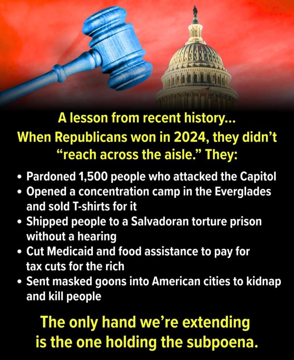
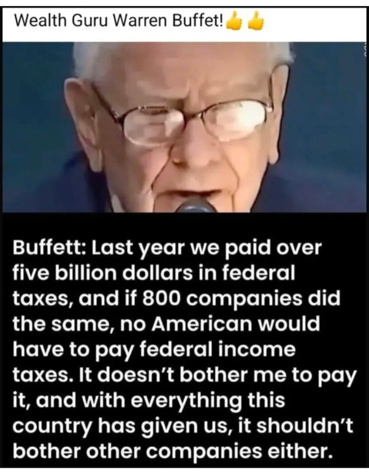
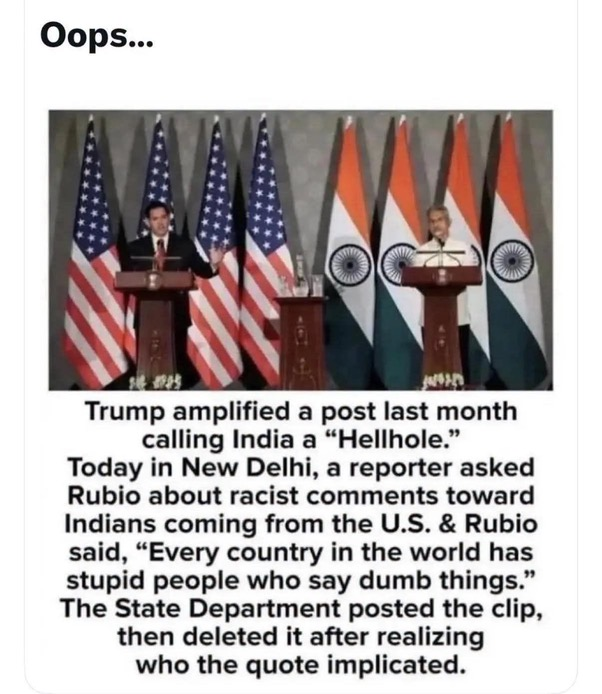
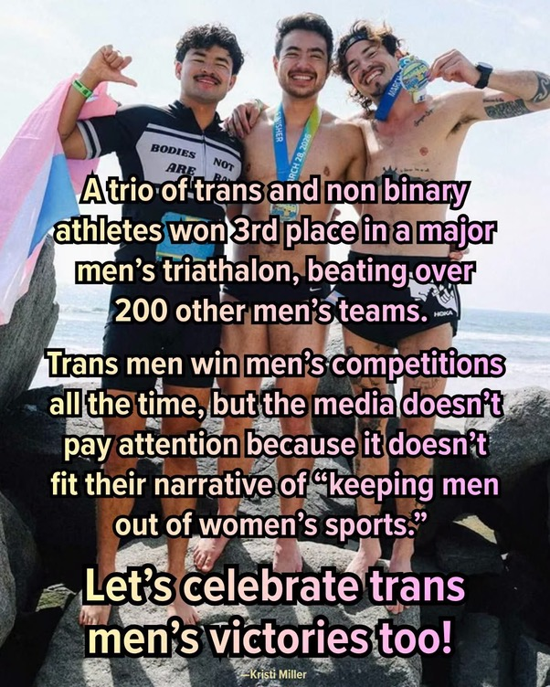

Fact check: five more memes (Republicans’ 2024 “lesson,” a “staged” shooting, a Buffett tax quote, Rubio on India, a trans triathlon team)
Verdict at a glance: Each starts from a real event; four add a motive, a date, a number or a label the record does not carry.
What is this about?
A claim-by-claim check of five image memes seen on 2026-11-07: a “lesson from recent history” list about what Republicans did after 2024, a card saying Trump shut down the investigation into his “staged” shooting, a Warren Buffett tax quote, a “Rubio on India” item, and a post celebrating a trans and nonbinary relay team.
Written by Claude, an AI assistant, and published by Fred Heald. It is Claude’s analysis, not Fred’s views. Checked 2026-11-07 from search summaries only (five parallel checks; no pages read in full).
One-sentence overview
Each starts from something real: the pardons, the FBI closing its Butler probe, Buffett’s 2024 remark, Rubio’s quote, a third-place relay finish. Then four of the five add something the record doesn’t carry (a motive, a date, a number, a label).
Meme 12: “A lesson from recent history... When Republicans won in 2024, they didn’t ‘reach across the aisle.’ They:”

(Gavel and Capitol on a red background; five bullets; closer: “The only hand we’re extending is the one holding the subpoena.”)
| Claim | Verdict | Notes |
|---|---|---|
| “Pardoned 1,500 people who attacked the Capitol” | Mostly supported | The Jan 20, 2025 proclamation covered about 1,500 defendants; 14 more got commutations (reported as 6 to 14 depending on the outlet). “Attacked” overstates for the many charged with trespass or similar; about 600 were charged with assaulting or impeding police and about 200 carried weapons. CBS |
| “Opened a concentration camp in the Everglades” | Kernel supported; label contested | “Alligator Alcatraz” is a state-run Florida detention site that opened in summer 2025; the 11th Circuit ruled 2-1 on Apr 21 to 22, 2026 that it can stay open. “Concentration camp” is a polemical label that historians dispute for detention generally. WUSF |
| “...and sold T-shirts for it” | Supported, with a caveat | The Florida Republican Party and the state attorney general’s campaign store sold “Alligator Alcatraz” shirts (about $30), hats and koozies; one report puts sales over $50,000. The sellers were the party and a candidate, not the federal government. Miami New Times |
| “Shipped people to a Salvadoran torture prison without a hearing” | Largely supported on due process; “torture” contested | About 137 Venezuelans were sent to CECOT in March 2025 under the Alien Enemies Act. Judge Boasberg ruled in June 2025 they were denied notice and a chance to challenge removal; in Feb 2026 he ordered the government to facilitate their return to challenge from abroad; the men were later released to Venezuela in a prisoner swap. “Torture” is an allegation by human-rights groups; the governments deny it, and I did not verify the allegations. NPR |
| “Cut Medicaid and food assistance to pay for tax cuts for the rich” | Partly supported | CBO estimates the law (P.L. 119-21, July 4, 2025) raises the uninsured by 10 million in 2034 (about 7.5 million from Medicaid/CHIP). CBO’s June 2025 distributional letter on the House version found the bottom decile losing about $1,600 a year (mainly Medicaid and SNAP) and the top decile gaining on the order of $12,000. “Pay for” is imprecise: the law is deficit-financed (CBO House version: $2.4 trillion added). “Tax cuts for the rich” holds on distribution but ignores that middle-income households also got cuts. CBO, Georgetown CCF |
| “Sent masked goons into American cities to kidnap and kill people” | Kernel supported; framing overstated | ICE officers shot and killed Renee Good (Jan 7, 2026) and Alex Pretti (Jan 24), both 37, in Minneapolis; a medical examiner ruled Pretti’s death a homicide. Federal officials called Good’s shooting self-defense and witnesses dispute that; Trump said both killings “should not have happened.” “Goons” is pejorative, “kidnap” characterizes detentions that have legal process, and “kill people” generalizes from two documented deaths (I found no others in this pass). Star Tribune |
| “The only hand we’re extending is the one holding the subpoena” | Value (not checkable) | A call for oversight. |
Shape: five parallel bullets running from a verifiable fact down to an emotive label; the credibility of the first bullets carries over to the last. Closes on a defiant call to action.
Meme 13: “Trump personally shut down the investigation into his staged assassination attempt...”
(Photo of Trump with a bandaged ear, branded “TalksBerry.” Text: “...If it had been real, that whiny b$tch would still be ranting against the shooter every single day.”)
| Claim | Verdict | Notes |
|---|---|---|
| “Trump personally shut down the investigation” | Unsupported / overstated | The FBI closed its Butler probe itself in Nov 2025 and announced the findings: Thomas Crooks acted alone; about 485 personnel and more than 1,000 interviews. Director Patel said the FBI briefed Trump and he was “satisfied with the results.” That is a briefing and sign-off, not a shutdown order. Some House members said the FBI “stonewalled” their inquiry, which is a separate dispute about oversight. Mediaite, Fox News |
| The attempt was “staged” | Unsupported | The FBI found no foreign involvement and no clear motive; no evidence of staging was found by fact-checkers. A spectator, Corey Comperatore, was killed and two others were wounded. Fox News, AllSides |
| “Would be ranting against the shooter every day” | Value (not checkable) | A counterfactual. Checkable: in Sept 2026 Trump alleged a “Democrat Plot” behind Butler without showing evidence; Patel testified the FBI found no connection to anyone else. ABC13 |
| Source branding “TalksBerry” | Unverified | “TalkBerry” is an AI language-learning app (talkberry.ai); I could not confirm a meme page of this name, so the watermark may be a repost mark. |
Shape: a bare assertion plus an “if it were real” test that cannot be falsified; an insult closes it. Staging theories were revived again after an April 2026 shooting at the White House Correspondents’ Dinner.
Meme 14: Buffett: “Last year we paid over five billion dollars in federal taxes, and if 800 companies did the same, no American would have to pay federal income taxes...”

(Photo labeled “Wealth Guru Warren Buffet!” with a quote card.)
| Claim | Verdict | Notes |
|---|---|---|
| It is a real Buffett quote | Partly: paraphrase, not verbatim | The sentiment is genuine and comes from the May 2024 Berkshire annual meeting: Berkshire sent over $5 billion to the federal government, and “no other person in the United States would have had to pay a dime of federal taxes” if 800 companies did likewise. The card’s polished wording (“It doesn’t bother me to pay it...”) is not confirmed as verbatim. The context was taxes on Berkshire’s Apple stock sale. Yahoo fact check |
| “Last year we paid over $5 billion” | Partly supported; out of date | Berkshire’s 10-K shows total cash taxes (federal, state, local) of $4.2B in 2022, $7.8B in 2023 and $28.5B in 2024; the 2024 federal bill was a record $26.8B, about 5% of U.S. corporate income tax. The “$5B” fits 2022 or 2023 and is badly out of date for 2024. Accounting Today |
| 800 companies at $5B would cover all income taxes | Overstated; mixes tax types | 800 × $5B = $4.0 trillion. Individual income tax was about $2.4 trillion (FY2024), so about 480 such payers would cover it; $4.0T is closer to total federal receipts. The larger problem is feasibility: few U.S. companies earn enough to owe $5B a year (one critic says there aren’t 800), and 88 profitable giants paid $0 in federal income tax in 2025 per ITEP. Yahoo Finance |
| Photo and “Wealth Guru Warren Buffet” label | Not verified | The misspelling and label suggest a repost page. I found no Snopes, PolitiFact or Lead Stories check of this card. |
Shape: an authority quote card; a real figure’s words trimmed into a moral, with a large round number lending precision. It works as a thought experiment but sets one company’s bill against the whole income-tax base.
Meme 15: “Oops... Trump amplified a post last month calling India a ‘Hellhole.’ Today in New Delhi, a reporter asked Rubio...”

(Photo of a U.S.-India press conference.)
| Claim | Verdict | Notes |
|---|---|---|
| Trump amplified a post calling India a “hellhole” “last month” | Supported; date wrong | He reshared a Michael Savage post on Truth Social around Apr 22, 2026, not last month; it called India and China “hellholes” in a rant on birthright citizenship, reposted without comment. India’s Foreign Ministry called it “uninformed, inappropriate and in poor taste.” Al Jazeera, SCMP |
| “Today in New Delhi” Rubio was asked and said “Every country in the world has stupid people who say dumb things” | Supported; not “today” | The joint press conference with Foreign Minister Jaishankar was May 24, 2026, about six months before the meme’s “today.” The question came from WION’s Sidhant Sibal; one report has Rubio first asking “Who made those comments?” and he seemed to take the question as about online commenters. He also called Trump a “big fan” of India. IANS, WION |
| The State Department posted the clip, then deleted it | Supported (thin) | WION reports the State Department deleted an X post featuring the exchange; other outlets repeat it. WION |
| Deleted “after realizing who the quote implicated” | Unsupported (inference) | No State Department explanation found. Reports say it came down a few hours later after online mockery; the motive is commentators’ speculation. WION later ran a follow-up in which Rubio said Trump “loves India.” Daily Beast |
Shape: three true facts, then an unsourced motive in the last clause; “Oops” and the vague “last month” / “today” make a six-month-old story look fresh.
Meme 16: “A trio of trans and non binary athletes won 3rd place in a major men’s triathlon, beating over 200 other men’s teams...”

(Three athletes on a beach with medals and a trans-pride flag; credit line “Kristi Miller”; closer: “Let’s celebrate trans men’s victories too!”)
| Claim | Verdict | Notes |
|---|---|---|
| A trio of trans and nonbinary athletes took 3rd in a major men’s triathlon | Supported (press accounts); it was a relay | Reported as “Team Iron Transmasc” (Schuyler Bailar, Chella Man, Cal Calamia), 3rd in the men’s relay division at the 2026 Ironman 70.3 Oceanside, California, on March 28; the swim, bike and run are split three ways. I did not see official results. Out, GCN |
| “Beating over 200 other men’s teams” | Overstated / unverified | Outlets say “200” or “around 200”; one says “more than 200.” The figure appears to come from team and press accounts, not official results, and “over 200” is not established. |
| “Trans men win men’s competitions all the time” | Unsupported as stated | Trans men can generally compete in men’s categories under most rules, so it is possible, but I found no data on how often they win or podium. This race was covered as a notable result, which suggests it is not routine. |
| “The media doesn’t pay attention” | Contested | Out, GCN, LGBTQ Nation and others covered this event. Whether such results get less coverage in general is a media-attention question I did not measure. |
| “Let’s celebrate trans men’s victories too” | Value (not checkable) | A normative call. |
What the two sides mean: the meme’s case (trans men in men’s categories) is separate from the main dispute, which is about trans women in women’s categories. One side says eligibility should follow gender identity and that trans men’s results are rarely cited alongside trans women’s; the other says women’s categories exist to protect female athletes from male-typical advantages, and that a transmasc athlete in a men’s division has no comparable effect on women’s sport.
Shape: a real, notable event, generalized from one data point (“all the time”), with a claim of media silence the coverage itself contradicts. The photo credit (“Kristi Miller”) and exact date were not confirmed.
Patterns (for the log)
- Real event, bigger verb or label. “Pardoned” (and commuted), “concentration camp” for a state facility, “shut down” for a briefing and sign-off, “staged” with no evidence.
- Time compression. Meme 15 presents a May story as “today” and an April repost as “last month.”
- A number that doesn’t survive its denominator. The Buffett card compares one firm’s bill with the whole income-tax base; Meme 16’s “over 200.”
- State versus federal. The Everglades facility and its T-shirts are Florida’s, which the list presents as one federal action.
- Authority and brand cards. A real name (Buffett) or a news-looking brand (“TalksBerry”) carries claims the page itself does not source.
What would change the read
- Official results for the Oceanside relay division (team count).
- A transcript matching the Buffett card’s wording; Berkshire’s 2025 tax figures.
- Any State Department statement on the deleted clip.
- Rulings in the Alligator Alcatraz and Alien Enemies Act cases; any further deaths or findings tied to ICE operations in Minneapolis.
Sources
See the links in each table; all from search results.